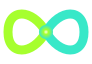

Operational Intelligence
The moat is not "agents." It's accumulated workflows, memory, communication patterns, and company-specific intelligence that compounds over time.

SYMMBIOTESymmbiote is a fully local AI operating system that learns your workflows, memory, and voice — then compounds that intelligence over years. No cloud. No data leaving your machine. A true symbiosis.
The moat is not "agents." It's accumulated workflows, memory, communication patterns, and company-specific intelligence that compounds over time.
Built around local inference with Ollama and modular providers, so businesses keep complete ownership of their data and workflows.
Capabilities, tools, plugins, memory systems, and workflows are all modular — designed for years of iteration, not a single demo.
symmbiote/ ├─ core/ # supervisor + routing ├─ llm/ # provider abstraction ├─ capabilities/# modular skills ├─ memory/ # persistent recall ├─ rag/ # context retrieval ├─ storage/ # abstracted backends ├─ safety/ # approval + guardrails ├─ plugins/ # extend everything ├─ workflows/ # company logic └─ ui/ # native desktop
Every layer has one job and a stable contract. What ships today is the foundation; what compounds over time is the moat — your memory and workflows, never flashy autonomous agents.
Tasks flow through a deterministic submit → approve → process loop, coordinated by a central orchestrator with state, an event bus, and a task queue.
corePowered by Ollama by default. Your prompts, data, and models stay on your machine — no cloud, nothing leaving the device.
llmAnything outward-facing — email, outreach, automation — waits for your approval. Bounded and deterministic: it asks before it acts.
safetyA stable provider contract behind every backend. Add or switch models from a YAML file, validated against what's installed — with zero framework leakage.
llmEmbeddings-backed long-term memory and retrieval. The real moat: accumulated workflows and company context that deepen with every task.
ragTasks, memory, settings, audit, and traces all live in local SQLite. You own every record — on disk, on your terms.
storageStructured logs, an append-only audit trail, and execution trace spans wrap everything consequential — so you always know what it did and why.
observabilityModular layers with stable contracts. Add backends, agents, stored entities, or background reactions without rewriting what's underneath.
pluginsLives in your Windows taskbar with tray controls and hotkeys — always a keystroke away, never a browser tab.
guiFour phases, one stable spine. Each builds on the last without ever rewriting it — the foundation ships first, the moat compounds after.
The clean, modular nervous system everything grows on — abstractions, config, the LLM provider, local-first storage, and full observability.
Embeddings-backed long-term memory and retrieval — the moat. Accumulated workflows and company context that deepen with every task.
Bounded specialist workers, deterministic capability routing, and tools — orchestrated safely, always asking before they act.
The real taskbar window — native Windows desktop integration with tray controls and hotkeys. Always a keystroke away.
Join the waitlist for architecture updates, development progress, alpha testing access, and early releases.
Connect this form to Formspree, Supabase, ConvertKit, Beehiiv, or your preferred backend.